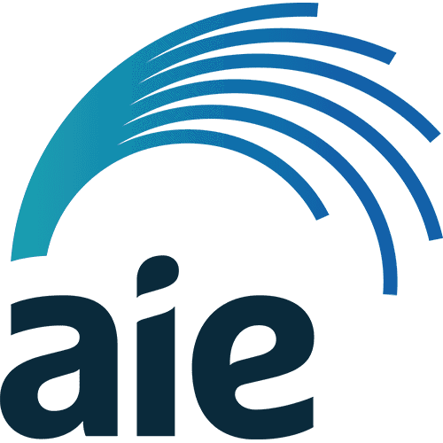

Education
-
2026 – 2028
Bachelor of Commerce
University of Melbourne
Finance & Business Analytics, expected July 2028. Strong interest in financial markets and using technology to gain insight from business data.
-
2022 – 2025
Bachelor of Computer Science
University of Adelaide
Cyber Security major. Foundations in data structures, algorithms and writing secure software.
-
2021 – 2022
Year 12, SACE Stage 2
University Senior College, Adelaide
Mathematical Methods, Specialist Mathematics, Physics, English Literary Studies and German Continuers.
-

2019 – 2020Certificate II in Information, Digital Media and Technology
Academy of Interactive Entertainment (AIE)
Game Programming Foundations, Computer Programming.
Experience
-
Oct 2026 – Present
Intern Current
Parliament of Victoria · Office of Evan Mulholland MP
- Listen to and record local concerns, helping the office understand the issues that matter most to the community.
- Research and write an independent policy research project as part of the internship.
-
Oct 2026 – Present
Site Labourer Current
Site Butler · Construction Services
- Receive, unload and move deliveries and materials around site.
- Provide general labouring support to builders and tradesmen.
- Keep construction sites clean, safe, and ready for work.
-
Jan 2026
Temporary Web Application Developer
Silotek Data Systems
- Designed methods to detect fraudulent degrees and certificates, improving the reliability and automation of verification.
- Built a module to extract text from complex documents, enabling keyword-based candidate screening.
-
Jan – Feb 2025
Digital Learning and Innovations Assistant
Tabor College
- Built software to automate downloading and organising hundreds of hours of lecture content, cutting processing time from months to days.
- Provided IT support across the organisation with a focus on clear communication and reproducible fixes.
-
Nov 2023 – Aug 2024
Produce Assistant
Romeo's Foodland
- Delivered high-quality customer service in a fast-paced retail environment.
- Managed stock presentation and upheld freshness standards.
-
Nov 2020 – Jan 2021
Software Development Intern
Orax Solutions
- Contributed to web development projects using modern frameworks and cloud-based architecture.
- Implemented custom features for business clients by translating business needs into technical solutions.
Skills
People & communication
Technical
Research & analysis
Languages: English and Afrikaans; reading knowledge of Dutch and German
Contact
Based in Melbourne, Victoria
The best way to reach me is by email or LinkedIn. References are available on request.